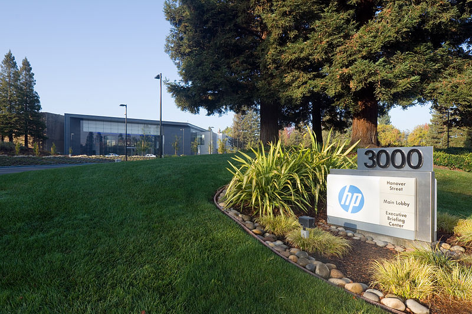
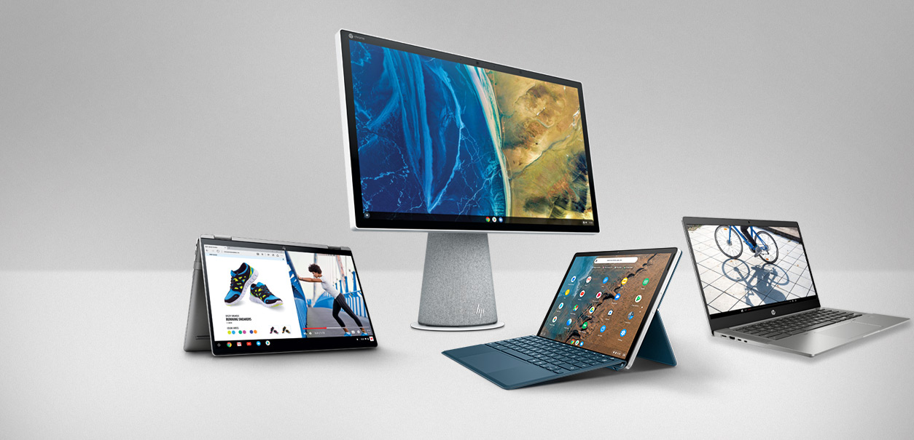

HP was founded by Bill Hewlett and Dave Packard in 1939. Their first product was an audio oscillator and one of their first customers Walt Disney. Disney used the oscillator to test audio equipment in the 12 specially equipped theaters showing Fantasia in 1940. HP entered the computer market with the HP 2116A in 1966. It was designed to control HP’s large product line of test and measurement equipment. By 1969, HP was marketing a timesharing computer system and continued to issue new products, including their HP-35 hand-held calculator and several computers in the 1970s. By the end of the 1980s they had a full range of computing equipment from large scientific machines to personal computers and peripherals. In 2002, HP acquired Compaq (and thus the merged remains of DEC, Tandem, and a few other firms).
Hewlett-Packard Company, American manufacturer of software and computer services. The company split in 2015 into two companies: HP Inc. and Hewlett Packard Enterprise. Headquarters were in Palo Alto, California.
|  |  |